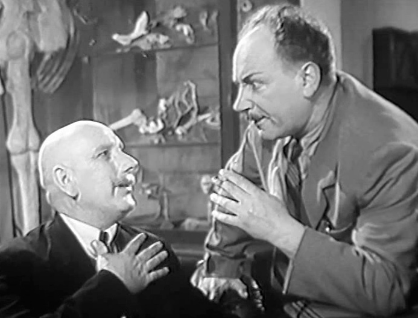

Назад да меню
Камедыя «Хто смяецца апошнім»

Кадр з фiльма «Хто смяецца апошнім» (1954)
Відэа на тэму Кандрат Крапіва. Камедыя «Хто смяецца апошнім»
1. Эпоха Крапівы ў нацыянальнай драматургіі
2. Актуальнасць камедыі «Хто смяецца апошнім»
3. Канфлікт у камедыі
4. Тэма і праблема
5. Аўтарская пазіцыя
6. Канфлікт паміж групамі дзейных асоб
7. Раскрыццё характараў у творы
8. Сцэнічнае жыццё камедыі
8. Сатырычная камедыя. Канфлікт у драматычным творы
ЧЫТАЦЬ п'есу «Хто смяецца апошнім»
ГЛЯДЗЕЦЬ фiльм «Хто смяецца апошнім»
(на рускай мове)
Тэст для самаправеркі
Назад да меню